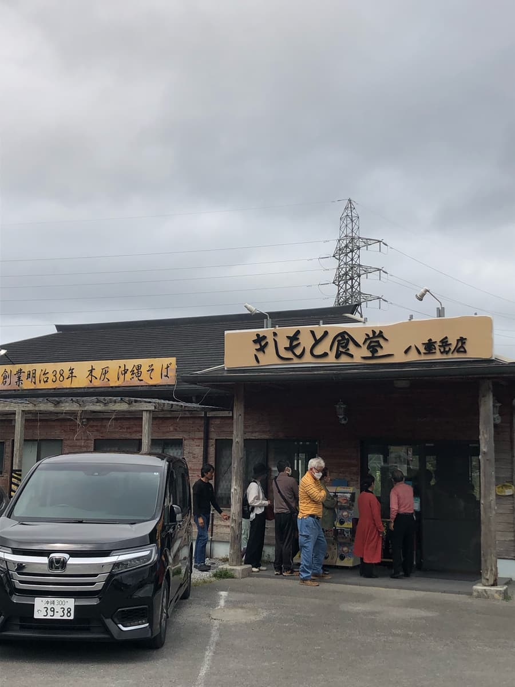
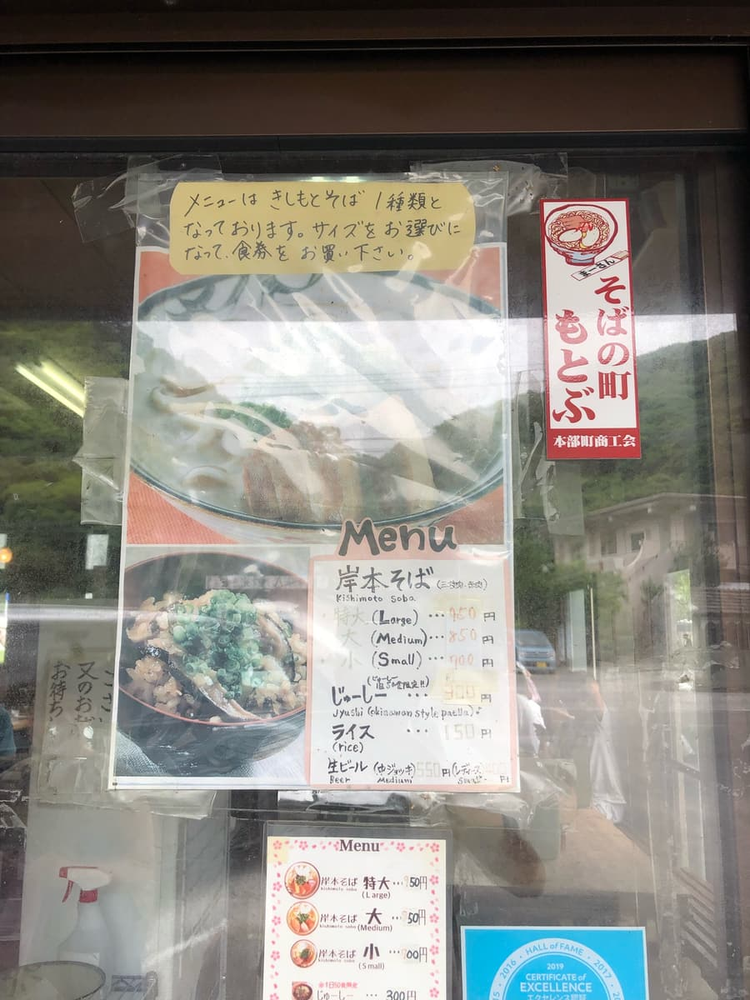
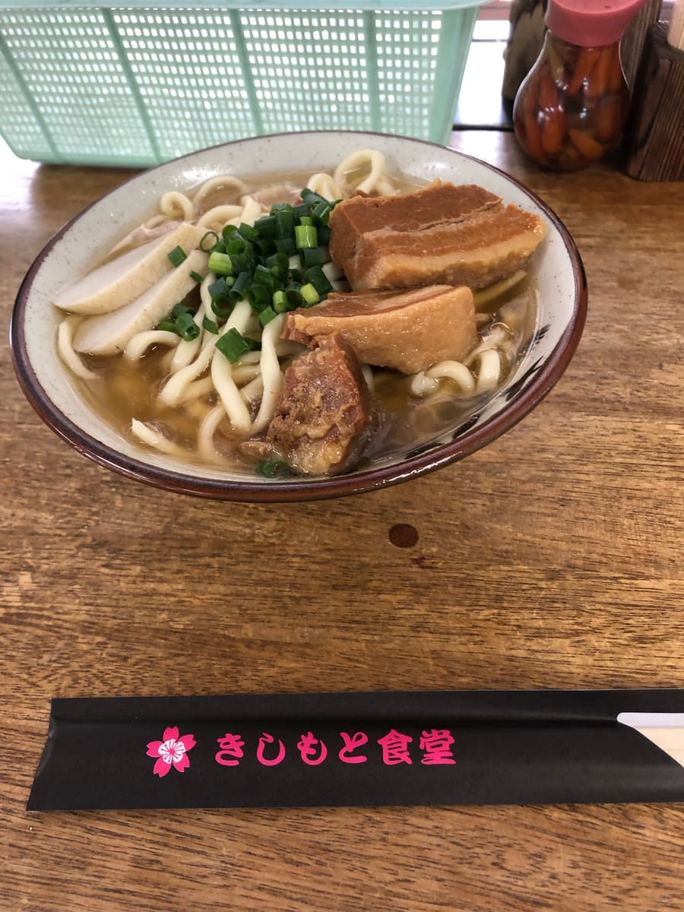

查「沖繩麵」的時候，常常會出現這間店的名字，所以在2023年3月去看看了😀 這次是我第一次吃本部町的沖繩麵店😁

菜單只有「岸本麵（特大）（大）（小）」1種。好像有點帥氣呢。

用售票機點了「岸本麵（大）」。

首先喝一口湯。道地的柴魚高湯，味道很紮實。很好吃，但感覺鹹味有點重。我是一路喝到最後一滴，但覺得有些人可能會覺得太鹹。
麵是使用木灰的沖繩麵，是稍微偏粗的中粗類型。跟湯頭很搭呢😀 配料是蔥、魚板，瘦肉和三層肉調味很到位，軟嫩又好吃。
評分（9.5分/15分）：覺得湯頭的鹹味有點重，但麵、湯頭、配料整體的平衡都很好，很好吃。
麵：★★★✬☆（3.5）
湯頭：★★★☆☆（3）
配料：★★★☆☆（3）